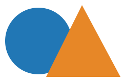

这段连续文字用于观察行框如何绕开浮动图像。上方靠近圆顶的文字可以更接近图像，中间靠近圆心的行需要留出更多空间。圆形只定义环绕边界时，图像本身并不会自动被裁成圆形，所以这里另用裁剪使视觉边界一致。继续阅读可以看到图像底部以后的文字恢复整行宽度。这段连续文字用于观察行框如何绕开浮动图像。上方靠近圆顶的文字可以更接近图像，中间靠近圆心的行需要留出更多空间。圆形只定义环绕边界时，图像本身并不会自动被裁成圆形，所以这里另用裁剪使视觉边界一致。继续阅读可以看到图像底部以后的文字恢复整行宽度。